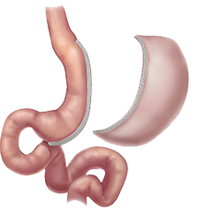

عملية تكميم المعدة في تركيا
ربّما تُعدُّ عمليات إنقاص الوزن الحلّ الأكثر نجاعةً في التعامل مع السُّمنة الشديدة ومضاعفاتها، ولعلّ من أهمّ تلك العمليات عملية تكميم المعدة في تركيا بالمنظار الجراحي
دعنا نتصل بك

العلاج الإشعاعي في تركيا
يعمل فريق العلاج الإشعاعي للأورام يداً بيد مع فريق متكامل متعدّد التخصّصات من أطباء وجراحين وفريق تم...
الطب الرياضي
يهتمّ الطب الرياضي بتشخيص ومعالجة إصابات الرياضيّين، ويُعنى كذلك بالجوانب السريريّة والتعليميّة، وبت...
جراحة الكتف
يمتاز مفصل الكتف بأنّه أكثر مفاصل الجسم حريّةً، وأوسعها مجالاً في الحركة، ولكن تلك الحريّة تجعله أكث...
عملية تحويل مسار المعدة في تركيا
تعدّ عملية تحويل مسار المعدة من أنواع عمليات السمنة، وتهدف لإنقاص وزن المريض الذي يعاني من سمنة مفرط...
ربّما تُعدُّ عمليات إنقاص الوزن الحل الأكثر نجاعة في التعامل مع السُّمنة الشديدة ومضاعفاتها، ولعلّ من أهمّ وأفضل تلك العمليات عملية تكميم المعدة بالمنظار، التي ازدادت شعبيتها في الآونة الأخيرة.
تتميز عمليات تكميم المعدة في تركيا و قص المعدة في تركيا في أنها تحقق نتائج عالية جدا , حيث عملية تكميم المعدة بالمنظار تمنح المريض مدة تعافي اسرع ونتائج افضل , واقل خطورة , يتم في تكميم المعدة استئصال جزء كبير من المعدة بشكل يشبه الكم , وبهذه الطريق يشعر الشخص المكمم بالشبع سريعاَ مما يساعده بخسارة الوزن بشكل كبيرة وفي فتره زمنية قصيرة .
جدول المحتويات
- ماهو تكميم المعدة ؟
- فوائد تكميم المعدة
- الاعراض الجانبية لعملية تكميم المعدة
- خطوات و مراحل عملية تكميم المعدة بالمنظار في تركيا
- ما بعد عملية تكميم المعدة
- هل عملية تكميم المعدة مفيدة لمرضى السكر؟
- عملية تكميم المعدة للأطفال
- عملية تكميم المعدة لمرضى المتلازمة الإستقلابية
- عملية تكميم المعدة والغدة الدرقية
- عملية تكميم المعدة والتدخين
- تكلفة عملية تكميم المعدة
ففي عام 2016 فقط تمّ إجراء أكثر من 120 ألف عمليّة تكميم معدة في الولايات المتحدة وحدها، وهو ما يشكِّل 58% من إجمالي عمليّات إنقاص الوزن في ذلك العام، مقارنة بنسبة أقل من 20% في العام الذي يسبقه.
ماهو تكميم المعدة ؟
تتضمّن عمليّة تكميم المعدة عزل واستئصال الجزء الأكبر من المعدة، مع ترك جزء رفيع منها نسبياً، وبشكل يشبه الكمَّ، ومن هنا جاءت هذه التسمية.
انواع عملية تكميم المعدة
تنقسم أنواع تكميم المعدة من حيث التقنية المستخدمة إلى جراحي (مفتوح) أو بالمنظار.
ومن حيث حجم المعدة المستأصل إلى جزئي وكلي.
والجدير بالذكر أن هناك أسماء شائعة لهذه العملية، مثل قص المعدة، وتصغير المعدة، والمقصودُ بها كلِّها عمليةُ التكميم.
تكميم المعده الجراحي
الذين يعانون من ارتفاعٍ مفرطٍ في مؤشر كتلة الجسم، بما نسبته (أكثر من 55)، فإنهم معرضون لخطر متزايد.
إن كلا الأسلوبين آمن وفعال لعلاج السمنة المفرطة، ومع ذلك، فإن عملية تكميم المعدة بالمنظار من العلميات التي توفر فقدانًا إجماليًا للوزن لمدة عامين.
وهناك ما يسوغ التجارب العشوائية طويلة الأمد، والتي تخضع للمراقبة؛ إذ تقارن بين العلاجات الجراحية لمجموعات كبيرة من مرضى السمنة الشديدة، والمرضى المعرضين للخطر؛ ولذلك، قد يوصي جرّاحك بإجراء تكميم للمعدة عبر الجزء الأول من الجراحة، المكونة من جزأين. وهذا يمكّن المريض من إنقاص وزنه للسنة الأولى قبل الجراحة الثانية، إذ تُجرى جراحة المجازة لمساعدة المريض على خسارة الوزن المتبقي؛ وقد لا يحتاج المريض إلى المرحلة الثانية من الجراحة فيما لو كان فقدان الوزن مناسبًا.
تكميم المعدة بالمنظار
أثناء تكميم المعدة بالمنظار، تُزال نحو خمسة وسبعين بالمئة من المعدة، ويترَك "أنبوب" أو "تكميم" معدني ضيق؛ ولا تُستأصل الأمعاء ولا يتم مجاوزتها أثناء عملية تكميم المعدة.
يستغرق تكميم المعدة بالمنظار من ساعة إلى ساعتين ليكتمل.

فوائد تكميم المعدة
أظهرت العديد من الدراسات أن عملية تكميم المعدة فعالة جدًا في علاج مرض السكري وارتفاع ضغط الدم والحالات الطبية الأخرى المرتبطة بالسمنة المرضية، وقد يصل الأمر إلى شفائهم.
هناك شعور بالرضا والسعادة عند المرضى لقدرتهم على المشاركة في المزيد من الأنشطة، وقيامهم بالعديد من المهام الحيوية، كما أن لهذه العملية الأثر الإيجابي على كثير من الأمراض والحالات الصحية، ومنها:
- مرضى القلب.
- ضغط الدم المرتفع.
- ارتفاع الدهون.
- توقف التنفس والاختناق أثناء النوم.
- داء السكري من النوع 2.
- السكتة الدماغية.
الاعراض الجانبية لعملية تكميم المعدة
- مضاعفات التخدير العام.
- نزيف من مكان العملية.
- احتمال حدوث تسريب مكان العملية بنسبة 1%.
- احتمال حدوث تضيُّق في مكان عملية التكميم بنسبة 1%، ويتمّ علاجها بالتنظير الطبي عبر الفم.
مخاطر و اضرار تكميم المعدة
كما هو الحال مع أي عملية جراحية، تتضمن عملية تكميم المعدة بعضاً من المخاطر الصحية المحتملة، والتي تظهر على المدى القريب والبعيد. ويمكن أن تشمل المخاطر المرتبطة بتكميم المعدة ما يلي:- نزيف شديد.
- التهابات.
- جلطات الدم.
- مشاكل في الرئة أو التنفس.
- تسريب من الشق الجراحي في المعدة.
كذلك بعد جراحة تكميم المعدة يمكن أن تبدأ بعض المخاطر والمضاعفات بالظهور على المدى البعيد، ومن هذه المضاعفات ما يلي:
- انسداد الجهاز الهضمي.
- فتق.
- الارتجاع المعدي.
- انخفاض نسبة السكر في الدم (نقص السكر في الدم).
- سوء التغذية.
- التقيؤ.
شروط عملية تكميم المعدة ؟
بداية يمكنك استخدام الأداة في الرابط التالي لحساب كتلة الجسم لديك:
أداة إلكترونية لحساب كتلة الجسم BMI
يتمّ اللجوء إلى عملية تكميم المعدة لعلاج السمنة، في حال:
- ارتفاع مؤشر كتلة الجسم إلى أكثر من 40 كيلوغرام لكل متر مربع، سواء مع وجود مضاعفات للسمنة أو عدمها.
- ارتفاع مؤشر كتلة الجسم إلى ما بين 35-40 كيلوغرام لكل متر مربع، ووجود أحد مضاعفات السمنة الخطيرة، مثل السكري، واضطرابات النوم والشخير، وارتفاع ضغط الدم، وأمراض الشرايين التاجية وغيرها.
- ارتفاع مؤشر كتلة الجسم إلى ما بين 30-35 كيلوغرام لكل متر مربع، مع وجود صعوبة في السيطرة على مستويات السكر، أو وجود المتلازمة الاستقلابية.
خطوات و مراحل عملية تكميم المعدة بالمنظار في تركيا
يقوم الجراح بعزل أكثر من نصف المعدة طولياً باستخدام الدبّاسة الجراحيّة، ومن ثمّ استئصاله، ليُصبح شكل المعدة مثل الأنبوب الرفيع نسبياً ما يقلِّل كمّيَّة الطعام التي يمكن للمعدة استيعابها، ويسمى الجزء الباقي من المعدة بالكُمِّ، أو المعدة المكمَّمة.
يتمّ إجراء العمليّة للمريض تحت التخدير الكامل، عبر فتحات صغيرة يتمّ فتحها، بحدود 3 سم طولاً للواحدة منها، ويتمّ إدخال الأدوات الجراحية من خلالها، مع كاميرا مزوّدة بإضاءة قوية لتحسين الرؤية أثناء العمليّة، ويقوم الجرّاح بمتابعة العملية من خلال شاشة الكترونية.
يُنفخ تجويف البطن بغاز ثاني أكسيد الكربون الخامل، ويتم عزل الجزء الأكبر من المعدة طولياً واستئصاله بالشكل الذي ذكرناه سابقاً.
كم تستغرق عملية تكميم المعدة
تستغرق عملية تكميم المعدة حوالي ساعتين من الزمن. ويتم إجراؤه من خلال عملية منظارية شبه جراحية، لذلك لا يتطلب سوى شقوق صغيرة. وعادة ما يبقى مرضى تكميم المعدة في المستشفى من يوم إلى يومين تقريباً.
كيف يتم تكميم المعدة بالمنظار ؟
تُجرَى جراحة تكميم المعدة بالمنظار في المستشفى تحت التخدير العام؛ إذ يقوم الجراح بعمل حوالي خمس شقوق صغيرة في بطنك، وتُجرَى الجراحة باستخدام تلسكوب رفيع طويل متصل بكاميرا صغيرة في النهاية.
تُستَخدَم الأدوات التي تُدخَل عبر الشقوق لإزالة نحو ثمانين بالمئة من معدتك، عبر استخدام الصور على شاشة التلفزيون من قِبَل الجرّاح في غرفة العمليات.
تزيل هذه الجراحةُ المنحنى الخارجيَّ من معدتك، ويسمى قاعَ المعدة، وبعد إخراجه، يغلق الجراحُ باقي المعدة، على شكل أنبوب يشبه كم القميص، ومن هنا جاءت تسمية العملية باسم "تكميم المعدة".
ما بعد عملية تكميم المعدة
يبيت المريض في المستشفى لليلة واحدة بعد العملية، حيث يصيب المريض شعور ببعض الغثيان ما بعد العملية، فيتمّ علاجه بأدوية مضادّة للغثيان، ومسكِّنات للآلام.
يبدأ المريض بشرب كمياّت قليلة من الماء والأطعمة السائلة في صباح اليوم التالي للعملية، ويتم زيادة تلك الكميات تدريجيّاً في حال تقبُّل المريض للغذاء دون حدوث قيء وغثيان، للوصول إلى نظام غذائي سائل كامل.
وبعد خروج المريض من المستشفى يتمّ تحديد حمية غذائية له، تشمل الماء والسوائل، وتستمرّ الحمية لفترة قصيرة بعد العملية، ويتمّ تحويل الحمية السائلة إلى حمية عاديّة تدريجياً.
نظام الاكل بعد عملية تكميم المعدة
بعد عملية تكميم المعدة يجب على المرضى الالتزام بتناول الطعام قليل الدسم والخالي من السكر، بما في ذلك مصادر البروتين الخالية من الدهون والخضروات غير الليفية.
بعد عملية الجراحة هناك بعض النصائح التي يمكن أن تساعدك في البقاء على المسار الصحيح، والتي تضمن لك التعافي من المرض، ومن هذه النصائح ما يلي:
- استخدم الخلاط أو معالج الطعام لهرس الأطعمة.
- تعلم كيفية التعرف على الفرق بين الجوع (الجسدي) والشهية (العقلية / العاطفية).
- لا تفرط في تناول الطعام – لأن ذلك سيؤدي إلى تمديد معدتك.
- قم بمضغ الطعام بشكل بطيء.
- تجنب الأطعمة التي تحتوي الدهون غير المشبعة، والأطعمة المقلية والمعالجة والسريعة.
- تجنب التعرض للجفاف، وذلك من خلال احتساء الماء.
- تناول الأطعمة التي تحتوي الفيتامينات والمكملات الغذائية.
- تجنب شرب الكحول.
- تجنب تناول الأدوية المضادة. والتي قد تقلل من طلاء المعدة الطبيعي الوقائي.
الفيتامينات بعد عملية تكميم المعدة
قد يُطلب من أولئك الذين خضعوا لجراحة تكميم المعدة تناول فيتامينات كاملة، وكالسيوم مع فيتامين د والحديد وفيتامين ج وفيتامين ب 12.
وقد ينصح البعض بفيتامينات ومكملات أخرى؛ وذلك يعود لكل حالة على حدة، حسب الفحوصات واستشارة الأطباء.
نتائج عملية تكميم المعدة في تركيا
فقدان الوزن: بعد عامين من العملية يفقد المريض 60% من وزنه الزائد، حتى يصل إلى مؤشر كتلة جسم ما بين 25-32 بحسب وزنه قبل العملية.
تحسُّن السكري من النوع الثاني: وذلك لدى 66% من المرضى، بحسب ما أفادت به دراسة تمّ فيها تقييم المرضى لمدة 13 شهراً بعد العملية. نتائج عمليات المعدة قبل وبعد في تركيا
 قبل
قبل
 بعد
بعد
 قبل
قبل
 بعد
بعد
 قبل
قبل
 بعد
بعد
 قبل
قبل
 بعد
بعد


مراحل نزول الوزن بعد التكميم
تعمل عملية تكميم المعدة على إنقاص الوزن من خلال عاملين أساسيّين:
أولهما: عامل ميكانيكيّ بحت (تقليل استيعاب المعدة للطعام)، والآخر: عامل كيميائي هرموني (ضبط الشهية).
العامل الميكانيكي: يتمثّل في تقلُّص حجم المعدة تماماً بعد خضوع المريض لعملية التكميم، من حيث قدرة المعدة الاستيعابية وقابليّتها للتمدد، مما يقلِّل كميَّة الطعام التي يتناولها الشخص قبل شعوره بالامتلاء.
العامل الهرموني: حيث اكتُشِف أن عملية التكميم تؤثر في الهرمونات التي تتحكم بالشهية، مثل: هرمون الغريلين ghrelin، وهو هرمون الجوع فباستئصال ذلك الجزء من المعدة، والذي يسمى fundus باللاتينية، لوحظ هبوط واضح في مستويات هذا الهرمون الذي يحفِّز الشهيَّة.
بالإضافة إلى ذلك فإنّ تكميم المعدة يزيد من إفراز هرمون أخر يسمّى: الهرمون المشابه للغلوكاغون GLP-1، الذي يزيد من إفراز الأنسولين، ويقلِّل من سرعة تفريغ المعدة، ما يقلّل الشعور بالجوع والرغبة في تناول الطعام.
نسبة نجاح عملية تكميم المعدة
إن نسبة نجاح تكميم المعدة تصل إلى ثمانين أو تسعين بالمئة، وذلك وفق مايلي:
- في المتوسط، يحصل الأشخاص على فقدان الوزن الزائد بحوالي 60-70٪ خلال عام واحد من الجراحة.
- تتحسن معظم الحالات الصحية المرتبطة بالسمنة، أو تدخل في مرحلة الاستقرار، مثل مرض السكري من النوع 2، وارتفاع ضغط الدم، وتوقف التنفس أثناء النوم، وأمراض الكبد الدهنية، وآلام المفاصل، وارتفاع نسبة الكوليسترول في الدم.
- يشعر الأشخاص بجوع أقل، ورغبة أدنى في تناول الطعام.
هل عملية تكميم المعدة مفيدة لمرضى السكر؟
يرى كثير من المختصين أن الأفراد المصابين بداء السكر يظهرون تحسناً فورياً ملحوظاً بعد جراحة تكميم المعدة، ولقد أظهرت الدراسة أن عمليات علاج البدانة، مثل عملية تكميم المعدة أكثر فعالية من العلاج بالعقاقير وحده، في إدارة مرض السكري. حيث يكون الجزء المتبقي من المعدة صغيراً. ويبدو أن لاستئصال المعدة بعض التأثيرات المستقلة لفقدان الوزن على استقلاب الجلوكوز، وهذا يسبب أيضاً بعض التغييرات في هرمونات الأمعاء التي تحسن حالة مرضى السكري.
عملية تكميم المعدة للأطفال
أصبحت جراحة علاج البدانة أو تكميم المعدة علاجاً شائعاً لمرضى السمنة خلال السنوات الأخيرة، ومن الملاحظ أن عملية استئصال المعدة بشكل عمودي يؤدي إلى أفضل النتائج للمرضى المراهقين.
حيث لا تؤثر هذه العملية على كيفية هضم الجسم للطعام أو امتصاص العناصر الغذائية، لذا فإن احتمال حدوث أي مضاعفات غذائية بعد العملية احتمال ضئيل. وهذا مهم للأطفال والمراهقين الذين لا تزال أجسادهم معرضة للنمو والتغيير.
عملية تكميم المعدة لمرضى المتلازمة الإستقلابية
حسب دراسة عامّة تمّ إجراؤها في 11 دولة وأكثر من 24 مركزاً صحيّاً، تمّ التثبّت من فاعلية هذا النوع من العمليّات لمرضى السكري، والمصابين بالمتلازمة الاستقلابيّة، والتهاب الأمعاء المزمن.
بالإضافة إلى ذلك تلعب هذه العملية دوراً إيجابيّاً في تحسّن مرضى السكري، وإلى شفاء تامّ في بعض الأحيان لمرضى السكري من النوع الثاني.
عملية تكميم المعدة والغدة الدرقية
يعاني مرضى السمنة المفرطة من خمول في الغدة الدرقية، ولقد أثبتت عمليات التكميم تحسن وظائف الغدة الدرقية عند الذين يعانون من السمنة المفرطة، وهذا يعني أن تأثير جراحة السمنة على تحسين وظائف الغدة الدرقية، يتوسطها آليات أخرى غير فقدان الوزن، وربما تكون الهرمونية.
عملية تكميم المعدة والتدخين
فيما يخص المدخنين الراغبين بإجراء عملية تكميم للمعدة، فإن الأطباء ينصحون بالتوقف عن التدخين، لفترة لا تقل عن 6 إلى 8 أسابيع قبل العملية الجراحية، كما يُوصَى بتثقيفهم حول المخاطر الجراحية لتعاطي التبغ، والفوائد الصحية للإقلاع عن التدخين.
تعد عملية تكميم المعدة حلاً مناسباً لكل من يعاني من مرض السمنة المفرطة، سواء من المدخنين أو غير المدخنين. ويمكن القول بأن المرضى الذين يدخنون منذ عام قبل إجراء عملية تكميم المعدة، يضعون أنفسهم في خطر أكبر من غير المدخنين.
تكلفة عملية تكميم المعدة
تتراوح عملية تكميم المعدة بين 2.700 إلى 3،200 دولار أمريكي.
سؤال وجواب - تكميم المعدة
تكميم المعدة هو إجراء جراحي يؤدي إلى إنقاص الوزن عن طريق إزالة الجزء الأكبرمن المعدة أي ما يقرب 75 % وترك جزء رفيع يشبه الكم ومن هنا أتت التسمية.
لاتتعدى مخاطرعملية تكميم المعدة مخاطر أي عملية جراحية على المدى القريب أوالبعيد مثل النزيف والالتهابات، يمكنكم الاطلاع على المقال التالي لمعلومات أكثر استفاضة.
تنقسم أضرار عملية تكميم المعدة إلى قسمين : • أضرار على المدى القريب: 1. النزيف أثناء العملية. 2. الالتهابات في موقع العملية. 3. تسريب عند طرف المعدة الذي تمت إزالته 4. إصابة أعضاء أخرى أثناء العملية. • أضرار على المدى البعيد: 1. الفتق 2. سوء التغدية 3. الارتجاع المعدي المريئي التقيؤ
تتم عملية تكميم المعدة بالمنظار الجراحي حيث يتم تخدير المريض بالمخدر الكلي ثم إجراء فتحات صغيرة بالبطن لا يتعدى طولها ملليمترات، ثم استخدام المنظار لاستئصال 80% من حجم المعدة، مع استئصال الأجزاء التي تحتوي على الهرمونات الضارة بالمعدة، وبعد الانتهاء يتم غلق الفتحات الصغيرة بطريقة تجميلية حتى لا تترك أثراً.
تتراوح عملية تكميم المعدة بين 2.700 إلى 3,200 دولار امريكي.
تتسبب عملية التكميم في إنقاص الوزن بنسبة تصل إلى 60%
لم تظهر الدراسات أي علاقة مباشرة بين عملية تكميم المعدة والسرطان.
يبدأ بنظام غذائي يعتمد على السوائل والأطعمة اللينة, حتى تتكيف المعدة مع النظام الغذائي الجديد, ثم تعود تدريجياً إلى الأطعمة المعتادة ولكن بكميات أقل.
على العكس تماماً عمليات السمنة بشكل عام تزيد من فرص الخصوبة وفرص الحمل.
تتسبب عملية التكميم في إنقاص الوزن بنسبة تصل إلى 60%
هل لديك إستفسار : تواصل معنا - الإستشارة مجانية
علاجك الطبية .. لتكن الصحة تاجك.